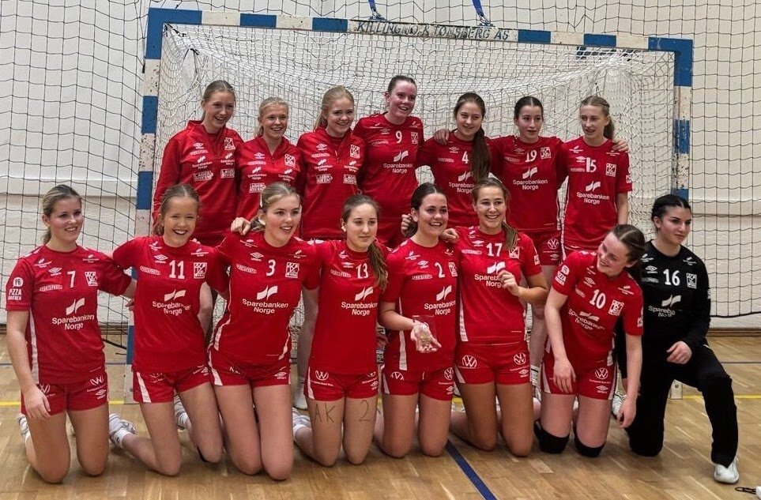
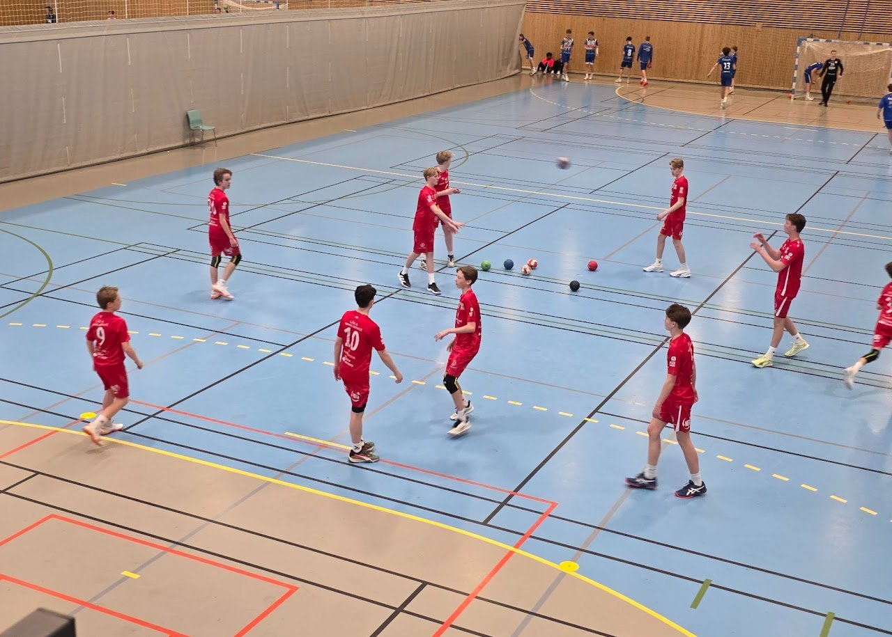

AK28 var sterkt representert i helgas regionale sluttspill i Stavanger, med to lag som representerte klubben.

Jenter 2011 (bildet) gjorde det meget godt med andreplass i sluttspillet. AK28-jentene vant to av sine tre kamper og sto dermed igjen med fire poeng etter helgens kamper. Best i det regionale sluttspillet ble Åkra med tre seire av tre mulige.
Jenter 2011 (J14)
| Kamp | Resultat |
|---|---|
| AK28 – Åkra | 15–27 |
| AK28 – Lund | 20–15 |
| Forus og Gausel – AK28 | 16–21 |
AKs gutter 2011 fikk det noe tøffere i det regionale sluttspillet med tre tap.

Gutter 2011 (G14)
| Kamp | Resultat |
|---|---|
| Stavanger – AK28 | 26–19 |
| Farsund og Lista – AK28 | 32–13 |
| AK28 – Nærbø | 21–31 |
Alle kampene ble spilt i Hetlandshallen.
Ytterligere ett lag fra AK28 var i aksjon i Hetlandshallen i Stavanger i helga. Samarbeidslaget Søgne/AK28 spilte seriekamper i den regionale juniorserien mot Viking og Havdur på lørdagen. Kampene endte med ettmålsseier mot Havdur og tap mot Viking.